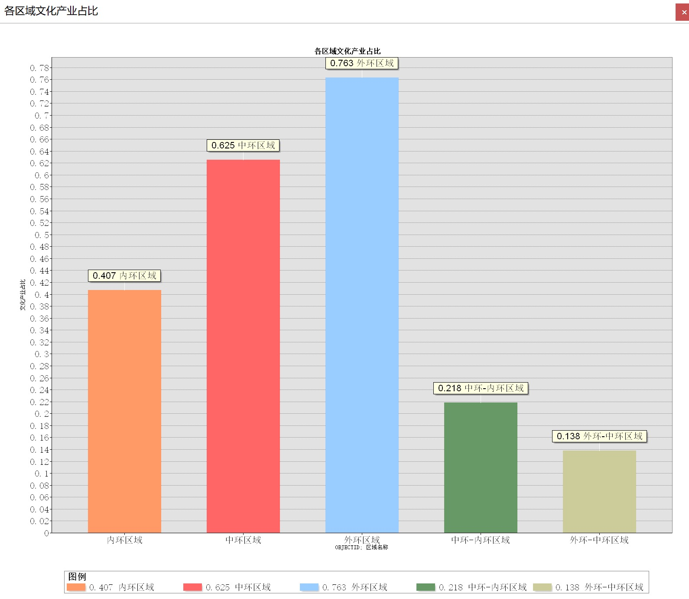

上海市文化产业布局现状与分析
图层：
外环_中环区域
中环_内环区域
内环区域
中环区域
外环区域
上海文化产业
查看文化产业分布柱状图

简单地图表述
全市分布图
全市热力图
统计图表
文化产业布局分析
杨浦与嘉定的比较
历史因素分析--杨浦与黄浦的比较
历史因素回归模型
空间分布分析
直线与实际距离分析
与其他产业的关系
文创中心
热点分析
通勤路线
HUFF模型
环同济经济圈
环同济POI分布与重新布局
统计图表
More
主页
简单地图表述
全市分布图
53070
个文化产业POI。